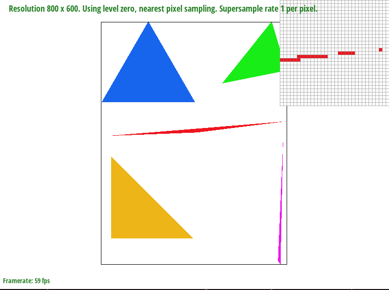
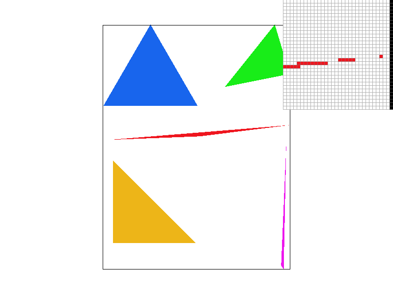
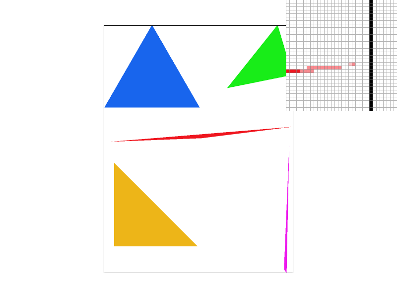
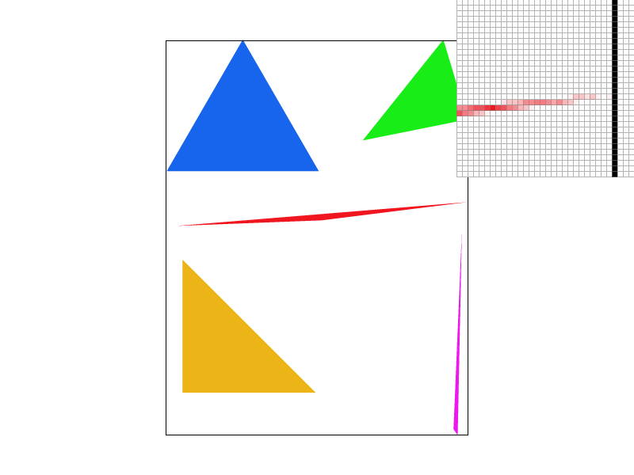
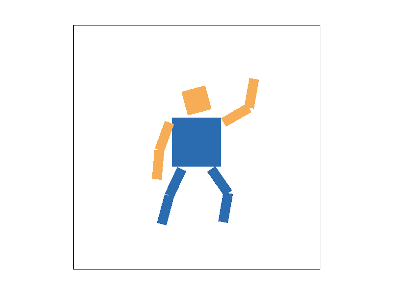
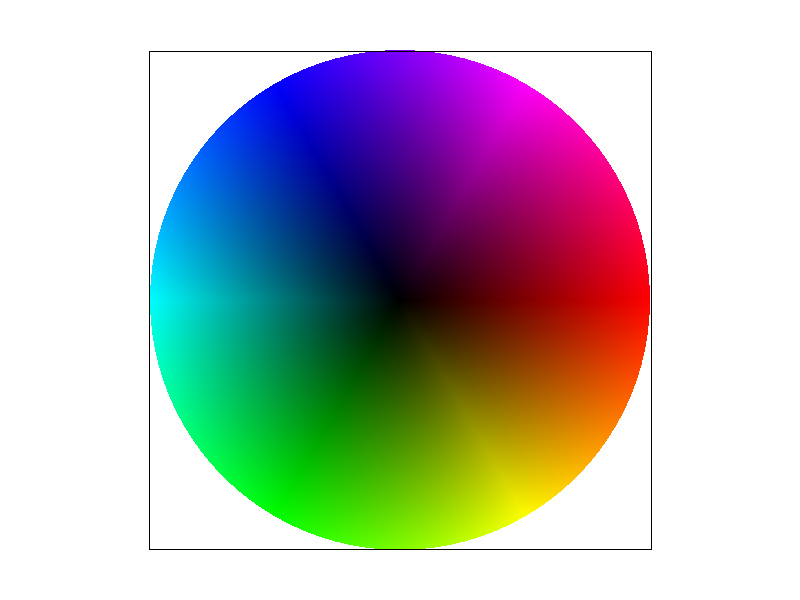
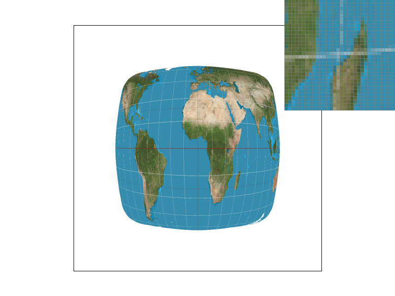
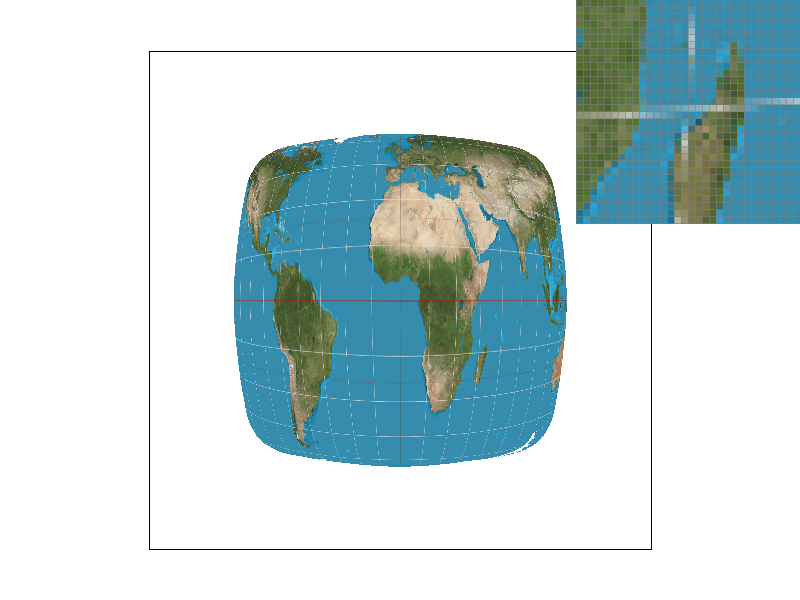
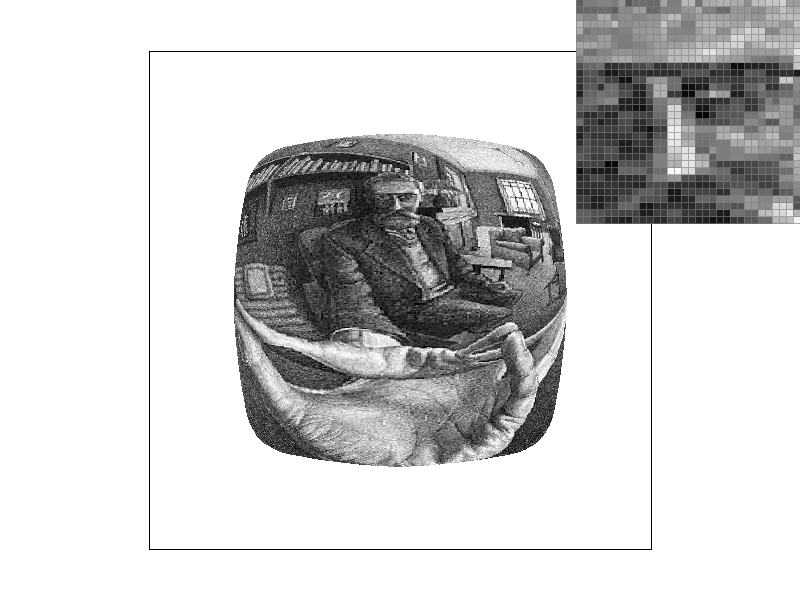

In this homework I built a software rasterizer that takes simplified SVG files and turns them into pixels, without any help from a GPU. It started with the most basic operation, deciding which pixels a single-color triangle covers, and grew one feature at a time into a small but complete rendering pipeline. The finished rasterizer supersamples every triangle to antialias its edges, applies hierarchical 2D transforms so shapes can be positioned relative to their parents, interpolates per-vertex colors across a triangle with barycentric coordinates, and maps textures onto triangles using either nearest or bilinear pixel sampling and either a single mipmap level or a level chosen from screen-space derivatives.
The thing that surprised me most is how much of the pipeline reuses one idea. The three edge functions I wrote for the inside test in Task 1 turned out to be the barycentric weights for Task 4, which are then what carry the texture coordinates in Tasks 5 and 6, and even the mipmap level is just those same coordinates evaluated one pixel over. I also came away with a much more concrete picture of aliasing: seeing a thin triangle literally break into pieces at one sample per pixel, and then watching supersampling, bilinear filtering, and mipmapping each fix a different part of the problem, made the lecture material about sampling and filtering feel a lot less abstract.
The way my algorithm works is simple. You start by creating a bounding box by finding the minimum and maximum values of the x and y values of the points. Some small changes here are the choice to ceil the values when finding the max and floor the values when finding the min in order to err on the side of caution and ensure there are no rendering errors. Then we create the functions for each edge using the cross product logic, and use it as a reference to find whether a point is on the left or right side of an edge. Finally we run this through an isInside check which determines whether the point is on the right / left of all edges by checking whether the value of the edge function is positive or negative for each edge e0, e1, e2.
There is a very small efficiency optimization made by finding the max and min values of the x and y coordinates of the points of the triangle and using that to create a bounding box to determine the regions where we run the individual checks for whether a pixel is on the inside of the triangle or not. Because the loop only visits pixels inside that bounding box, the algorithm does exactly the same amount of work as one that checks each sample within the bounding box of the triangle.

Supersampling takes several samples inside each pixel instead of one at the center, then averages them. It is equivalent to rendering the image at a higher resolution and shrinking it down with a box filter. A pixel that is half covered by a triangle ends up half that triangle's color and half the background, which turns hard staircase edges into smooth ramps and stops very thin triangles from disappearing between pixel centers.
The sample_buffer was enlarged to hold width * height * sample_rate colors. All the samples for one pixel are stored next to each other, at index (y * width + x) * sample_rate + k. In rasterize_triangle I added two inner loops over an s x s grid, where s = sqrt(sample_rate), and moved the sample point to x + (i + 0.5) / s, y + (j + 0.5) / s. Each sample that passes the same edge test as Task 1 is written to its own slot in the buffer. resolve_to_framebuffer then averages each pixel's sample_rate slots and converts the result to 8-bit RGB. set_sample_rate and set_framebuffer_target were updated to resize the buffer, and fill_pixel now writes the same color to every slot of a pixel so that points and lines survive the averaging step without being antialiased.



At rate 1 the tip of the thin red triangle breaks into disconnected chunks, because the sliver is narrower than a pixel and only shows up where it happens to cover a pixel center. At rate 4 the gaps are filled with lighter pink pixels whose intensity reflects how many of the four subsamples landed inside. At rate 16 the coverage estimate is finer still, so the edge becomes a smooth gradient and the sliver reads as one continuous shape.
The three transforms are 3x3 matrices acting on homogeneous coordinates (x, y, 1). translate(dx, dy) puts dx and dy in the last column of an identity matrix. scale(sx, sy) puts sx and sy on the diagonal. rotate(deg) converts degrees to radians and fills in the standard [cos, -sin; sin, cos] block. Nested <g transform> groups multiply these together so each body part is positioned relative to its parent.
My robot is waving hello while taking a step. The right arm is swung out and up at the shoulder with the forearm bent at the elbow so the hand points straight up, the left arm hangs at the side, the head is tilted, and the legs are split mid-stride with the front knee bent. To make the joints work, each limb segment is translated so its top edge sits on the joint before the group is rotated, so a rotation swings the segment around the shoulder, elbow, hip, or knee instead of spinning it in place. The elbow and knee groups are nested inside the shoulder and hip groups, so bending a knee moves with the leg. I also recolored the body blue and the head and arms orange.

Barycentric coordinates express a point P inside a triangle as a weighted blend of the three vertices: P = αA + βB + γC with α + β + γ = 1. Each weight is the area of the sub-triangle opposite that vertex divided by the total area, so a point sitting on vertex A has α = 1 and the others 0, and a point in the middle has all three weights around 1/3. Anything defined at the vertices, like color or texture coordinates, can be interpolated by taking the same weighted blend.
The three edge functions from Task 1 are each twice the signed area of a sub-triangle, so I get the weights for free: dividing each edge value by the total signed area gives α, β, γ. In rasterize_interpolated_color_triangle the loop is identical to rasterize_triangle, but instead of writing one flat color, each sample writes c0 * α + c1 * β + c2 * γ.

Pixel sampling means looking up a color from a texture image at a continuous (u, v) coordinate. Each screen sample is converted to (u, v) with the barycentric weights from Task 4 applied to the vertices' uv coordinates, and then Texture::sample turns that (u, v) into a color. Nearest sampling scales (u, v) by the texture size, rounds to the closest texel, and returns it. Bilinear sampling takes the four texels around the point and blends them: two lerps horizontally, then one lerp vertically, weighted by the fractional distance to each texel.


Nearest sampling is faster but shows blocky texels and jagged lines, since neighboring screen pixels can snap to different texels. Bilinear smooths those transitions by blending, at the cost of four texture reads and a few multiplies per sample. The difference is largest when the texture is magnified or when high-frequency detail like the grid lines is being sampled at a rate close to the texel spacing. Supersampling helps both methods, but bilinear at rate 1 already looks close to nearest at rate 16 for far less work, because it does its averaging in texture space rather than screen space.
Level sampling picks which resolution of the texture to read from. A mipmap is a chain of progressively half-sized, prefiltered copies of the texture. When one screen pixel covers many texels (the texture is minified), sampling the full-resolution level aliases; a lower-resolution level has already averaged those texels together, so it is the right one to read.
To choose a level, rasterize_textured_triangle computes (u, v) not just at the sample point but also one pixel to the right and one pixel down, and passes all three in SampleParams. Texture::get_level subtracts to get the uv change per screen pixel, scales by the texture width and height to convert to texels, takes the larger of the two vector lengths, and returns its log base 2. A pixel spanning one texel gives level 0, two texels gives level 1, and so on. L_ZERO ignores this and always uses level 0. L_NEAREST rounds to the closest integer level. L_LINEAR samples the two levels on either side and lerps between them; combined with bilinear pixel sampling that is trilinear filtering.
Tradeoffs: supersampling costs memory and time proportional to the sample rate, since the buffer and the number of edge tests both grow by that factor, but it antialiases geometry edges as well as textures. Level sampling costs only a third more memory for the mip chain and a couple of extra barycentric evaluations per sample, and it fixes texture minification aliasing very well, but it does nothing for triangle edges. Bilinear versus nearest is a small constant-factor cost with no extra memory, and mainly helps with magnification. L_LINEAR doubles the texture reads of L_NEAREST for a smoother transition between levels.
